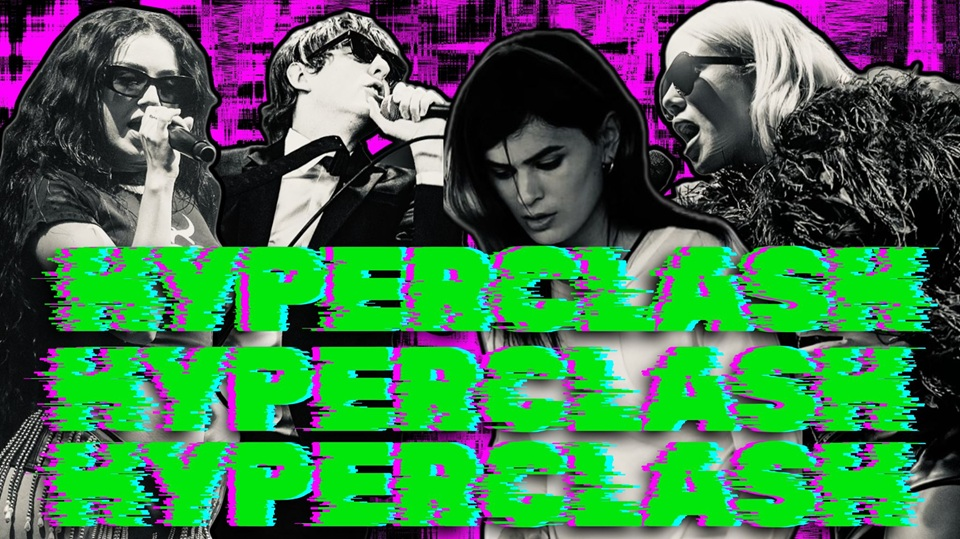
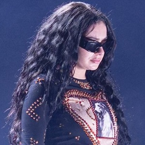
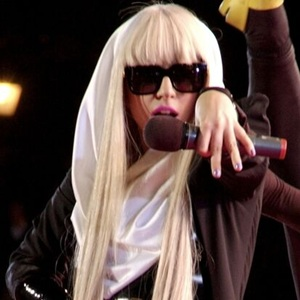
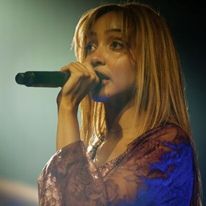
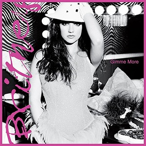
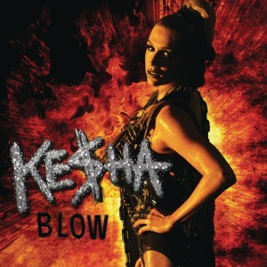
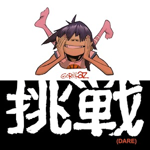

HYPERCLASH

An explosive, high-energy subgenre of electronic pop that combines the catchy melodies of dance pop, the digital chaos of hyperpop, and the sleazy attitude of early 2010s club music
WHERE DID IT COME FROM?
THE SOUND
Hyperclash (also known as sleaze pop) is both a fusion of multiple genre and a revival of older ones. Like most musical movements, it descends from a lineage of artists, songs, and styles from previous decades and combines them to create something new.
There are three main precursors to hyperclash: electroclash, electropop and hyperpop. These genres each provided something unique to the genre. Electroclash, which itself combined 1980s electronic genres, established the general template: raw synth beats, low-bit basslines, punk rock attitude, and a penchant for hedonism. Electropop, which featured such artists as Lady Gaga and LMFAO, fine-tuned the electroclash template for pop radio, while hyperpop brought the sound into the internet age with glitchy and industrial production styles, pitch-shifted vocals, and dense, overstimulating songwriting. Hyperclash is a distillation of these three genres, wedding the internet-native hysterics of hyperpop to accessible, club-ready song structures.
THE STORY
After peaking in popularity during the COVID lockdowns, hyperpop began to fragment, diversify, and lose cultural momentum. Offshoots began to cross-pollinate within the Lower East Side micro-neighborhood Dimes Square. Artists such as Frost Children and The Dare began to garner attention for their combination of 2000s-era electropop and hyperpop-infused production. Music journalist Ryan Schreiber notes that "this revival... occurred right at the stir-crazy, wall-climbing tail-end of lockdown, as people were spilling back into the streets and packing out clubs," connecting the success of these artists to the COVID-informed pendulum shift from quarauntine to party scene.
Associated acts such as The Hellp and Snow Strippers further popularized the sound, drawing such direct influence from 2000s electroclash acts like Crystal Castles, Soulwax, and Justice that the style was quickly dubbed indie sleaze revival. Media coverage and online chatter heavily debated (and sometimes derided) the genre's artistic credibility, as well as whether "indie sleaze" ever existed in the first place. Regardless, the indie sleaze revival soon crystallized into something larger with the first flagship hyperclash release -- Charli XCX's BRAT.
Released in June 2024, BRAT synthesized Charli XCX's experimental pop leanings with a more direct, confrontational approach indebted to classic 2000s electropop. The album cycle was a massive success, dubbed "brat summer," and catapulted Charli XCX and sleazy electropop aesthetics (back) into the mainstream. Subsequent hyperclash releases have not yet approached the cultural visibility of BRAT, but the album ushered in a new wave of aspiring pop artists. Major examples include Underscores, Slayyyter, Ninajirachi, Six Sex, MGNA Crrrta, 8485, and Fcukers, each trading in digital chaos, high-energy rhythm, and snappy, club-ready songwriting.
As the genre continues to grow and evolve, even newer artists are beginning to put their own spin on the sound. Brutalismus 3000 and Boys Noize represent the edgier, more punk-inflected edge of the spectrum, while moodier groups like Brothel in Belize continue the genre's long tradition of replicating Crystal Castles. There is also an emerging overlap between hyperclash and underground rap, with regular exchange occurring with up-and-comers like fakemink and slayr. These flexible boundaries suggest that the genre is still in its early stages, with the proposed name for this genre was only recently coined in an August 2026 editorial from music journalist Anna Gaca of Pitchfork.
LISTEN IF YOU LIKE...






FAMOUS EXAMPLES
WANT TO HEAR MORE?
Description of playlist; playlist embed linked below